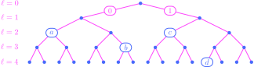
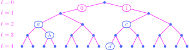

THIS CHAPTER IS CURRENTLY UNDER CONSTRUCTION!!!
9. Information theory#
9.1. KL divergence and entropy#
The basic measure that we use in this chapter to compare two probability measures \(P\) and \(Q\) is the mean logarithmic relative magnitude of \(P\) to \(Q\). The types of measures that we shall work with initially are ones defined on a finite probability space \(S\), so that they have mass functions \(p(s)\) and \(q(s)\) with finite support.
The absolute relative magnitude of the probability \(p(s)\) to the probability \(q(s)\) ordinarily refers to the ratio \(p(s)/q(s)\), while the logarithmic relative magnitude refers to the base-\(10\) logarithm of the absolute relative magnitude:
The intuition for this number is that it is the order of the absolute relative magnitude; indeed, if we have \(p(s) \approx 10^k\) and \(q(s) \approx 10^l\), then the logarithmic relative magnitude is roughly the difference \(k-l\).
Perhaps the most obvious immediate benefit of introducing the logarithm is that it yields a workable number when \(p(s)\) and \(q(s)\) are each on different scales. For example, let’s suppose that the mass functions \(p(s)\) and \(q(s)\) are given by
for \(s\in \{0,1,\ldots,10\}\); these are the mass functions of a \(\Bin(10,0.4)\) and \(\Bin(10,0.9)\) random variable, respectively. We then plot histograms for these mass functions, along with histograms of the absolute and logarithmic relative magnitudes:
Show code cell source
import numpy as np
import scipy as sp
import matplotlib.pyplot as plt
import scipy as sp
import math
import seaborn as sns
import matplotlib_inline.backend_inline
import warnings
plt.style.use('../aux-files/custom_style_light.mplstyle')
matplotlib_inline.backend_inline.set_matplotlib_formats('svg')
warnings.filterwarnings('ignore')
blue = '#486AFB'
magenta = '#FD46FC'
grid = np.arange(0, 11)
p = sp.stats.binom(n=10, p=0.4).pmf(grid)
q = sp.stats.binom(n=10, p=0.9).pmf(grid)
titles = ['$p(s)$',
'$q(s)$',
'$\\frac{p(s)}{q(s)}$',
'$\\log_{10}\\left(\\frac{p(s)}{q(s)}\\right)$']
probs = [p,
q,
p / q,
np.log10(p / q)]
ylims = [(0, 0.4),
(0, 0.4),
(-50, 0.75e8),
(-5, 10)]
fig, axes = plt.subplots(ncols=2, nrows=2, figsize=(8, 5), sharex=True)
for title, prob, ylim, axis in zip(titles, probs, ylims, axes.flatten()):
axis.bar(grid, prob, width=0.4)
axis.set_xticks(ticks=grid)
axis.set_ylim(ylim)
axis.set_title(title)
axis.set_xlabel('$s$')
plt.tight_layout()
The second row in the figure drives home the point: The absolute relative magnitudes are on such widely different scales that the plot is nearly useless, while the logarithmic relative magnitudes yield a much more informative and immediate comparison.
We obtain a single-number summary of the logarithmic relative magnitudes by averaging with weights drawn from the mass function \(p(s)\); this yields the number
Observe that we could have drawn the averaging weights from the mass function \(q(s)\) to instead obtain the single-number summary
But observe that
where the right-hand side is the negative of a number of the form (9.1). So, at least up to sign, it doesn’t really matter which of the two numbers (9.1) or (9.2) we use to develop our theory. As we will see, our choice of (9.1) has the benefit of making the KL divergence nonnegative. Moreover, we can also alter the base of the logarithm in (9.1) without altering the core of the theory, since the change-of-base formula for logarithms tells us that the only difference is a multiplicative constant. In the following official definition, we will select the base-\(2\) logarithm to make the later connections with bit strings in coding theory more transparent.
Definition 9.1
Let \(P\) and \(Q\) be two probability measures on a finite probability space \(S\) with mass functions \(p(s)\) and \(q(s)\). Then the Kullback-Leibler divergence (or just KL divergence) from \(P\) to \(Q\), denoted \(D(P \parallel Q)\), is the mean order of relative magnitude of \(P\) to \(Q\). Precisely, it is given by
Since averages of the form (9.3) will reoccur so often in the next few chapters, it will be convenient to introduce a new notation for them. So, if \(P\) is a discrete probability measure with mass function \(p(s)\) on a sample space \(S\) and \(g:S\to \bbr\) is a real-valued function, we will define
Provided that it is finite, we refer to this sum as the mean value or expected value of \(g(s)\). Note that this is a legitimately new usage of the expectation symbol \(E\), since there is no random variable given a priori. To see the connection with the previous usage of \(E\) for a discrete random variable \(X\) with mass function \(p_X(x)\), suppose that \(g:\bbr \to \bbr\) and note
Indeed, the first equality follows from the definition of \(E_{P_X}(g(x))\) given above, while the second equality follows from the LotUS. Therefore, using this new notation, we may rewrite (9.3) as
Notice again that the mean is with respect to \(P\). This breaks the symmetry between \(P\) and \(Q\) so that
except in special cases. Problems are encountered in a strict interpretation of the formula (9.3) when one or the other (or both) of the mass functions are \(0\). In these cases, it is conventional to define:
The KL divergence turns out to decompose into a sum of two of the most important quantities in information theory:
Definition 9.2
Let \(P\) and \(Q\) be two probability measures on a finite probability space \(S\) with mass functions \(p(s)\) and \(q(s)\).
The cross entropy from \(P\) to \(Q\), denoted \(H(P \parallel Q)\), is the number defined by
The entropy of \(P\), denoted \(H(P)\), is the number given by
\[ H(P) \def - \sum_{s\in S} p(s) \log_2(p(s)). \]When \(\bX\) is a random vector with finite range, we shall often write \(H(\bX)\) in place of \(H(P_\bX)\).
The connection between these entropies and the KL divergence is given in the next theorem. Its proof is a triviality.
Theorem 9.1 (KL divergence and entropy)
Let \(P\) and \(Q\) be two probability measures on a finite probability space \(S\). Then
The inequality in the first part of the following result is perhaps the most important in the foundations of the theory and ultimately justifies our conception of the KL divergence as a “directed distance” between two probability distributions. The second part shows that the maximum-entropy distributions are exactly the uniform ones.
Theorem 9.2 (Optimization of KL divergences and entropies)
Let \(P\) and \(Q\) be two probability measures on a finite probability space \(S\).
The Information Inequality. We have
\[ D(P \parallel Q) = H(P \parallel Q) - H(P) \geq 0 \]for all \(P\) and \(Q\), with equality if and only if \(P=Q\).
We have
\[ H(P) \leq \log_2{|S|} \]for all \(P\), with equality if and only if \(P\) is uniform.
Proof. For the first part, suppose that \(p_1,\ldots,p_n\) and \(q_1,\ldots,q_n\) are numbers in \((0,1]\) such that
It will suffice, then, to show that the objective function
is globally minimized when \(p_i = q_i\). But it is an eaasy exercise (using Lagrange multipliers) to show that a minimum can only occur when \(p_i = q_i\) for each \(i=1,\ldots,n\); one may confirm that this indeed yields a global maximum by showing that the objective function \(J\) is convex (its Hessian matrix is positive definite) and noticing that the second constraint in (9.4) is affine. (See here for an explanation of the latter fact.) The proof of the second part follows the same pattern, with only the obvious changes. Q.E.D.
So, when \(P\) is uniform, we have
It is pleasing to compare this latter maximum-entropy equation to the Boltzmann equation for entropy in statistical mechanics. The definitional equation
is the analog of the Gibbs equation for Boltzmann entropy.
In his initial paper, Shannon described entropy \(H(P)\) as a measure of uncertainty. From this perspective, the rationale behind the maximum-entropy equation (9.5) becomes clear: If one were to randomly draw a number from a probability distribution, the uniform distribution is the one that would result in the highest level of uncertainty regarding the outcome.
9.2. Source coding#
We now describe a coding-theoretic interpretation that sheds additional light on entropy and KL divergence. Rather than quantifying the degree of “uncertainty” present in a probability distribution, in this framework entropy gives a lower bound on the (average) minimum description length of the data modeled by a random variable or vector.
By way of introduction, suppose that \(X\) is a discrete random variable with range \(R = \{a,b,c,d\}\). Our goal is to construct an encoding of \(X\), by which we mean an assignment of a bit string to each symbol in \(R\). For example, we might encode \(X\) as
We can visualize this encoding by drawing a binary tree with five levels (including the root):
{kind=link}
To read this tree, begin at the root node at the top; then, follow the edges downward to find the nodes labeled by the symbols in \(R\). A positively sloped edge represents a \(0\), while a negatively edge represents a \(1\). Thus, for example, to reach \(d\) beginning from the root node, we follow edges labelled \(1\), \(1\), \(0\), and \(0\). This sequence of binary digits is exactly the code word for \(d\), and thus paths through the tree represent code words. The numbered levels \(\ell\) of the tree appear along the left-hand side of the figure; notice that these numbers are also the lengths of the code words.
Notice also that every path through the tree beginning at the root node and ending at a leaf in the lowest level contains at most one symbol in \(R\). This is in contrast to the encoding of \(X\) represented by the following tree:
{kind=link}
with corresponding code words
Indeed, in this latter encoding, there are multiple paths from the top to the bottom level that contain more than one symbol in \(R\). These paths manifest themselves as code words that are prefixes of other code words: The code word for \(a\) appears as a prefix in the code word for \(b\), and the code word for \(c\) appears as a prefix in the code word for \(d\). For this reason, encodings like the first (9.6) are called prefix-free codes.
Now, returning to our prefix-free code, consider the set of all descendants of symbols in \(R\) that are in the lowest level, including any symbols in \(R\) that happen to lie in the lowest level; these are all highlighted in:

If a symbol in \(R\) is on level \(\ell_i\), then it has \(4 - \ell_i\) descendents in the lowest level. Then obviously \(\sum_{i=1}^4 2^{4-\ell_i} \leq 2^{4}\) (count the highlighted nodes!), and so
In fact, this latter inequality should always be true for any encoding of \(X\), provided that the code is prefix free. Can you see why?
9.3. Conditional entropy and mutual information#
Definition 9.3
Let \(\bX\) and \(\bY\) be two random vectors with finite ranges. The mutual information between \(\bX\) and \(\bY\) is the KL divergence
Theorem 9.3 (Mutual information and entropy)
Let \(\bX\) and \(\bY\) be two random vectors with finite ranges. Then:
Proof. The proof is a computation:
as desired. Q.E.D.